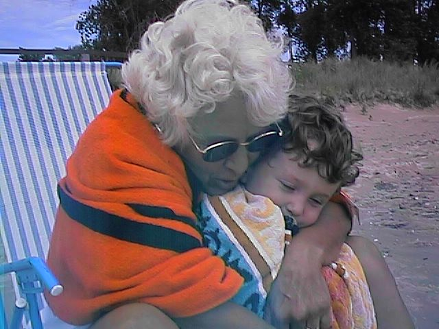
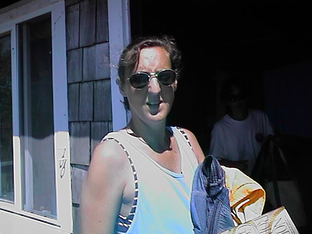

Chris, Leigh, Roger, and Matthew
March 27, 2000
Click on the link above to view the latest from Stamford!
November 17, 1999
Click on the link above to view the next-to-latest from Stamford!
July 31, 1999
Last Summer at the cottage
Cottage, July 1999


April 18, 1999
February 25, 1999
[ Roger, Leigh and Lots of Snow! ]
[ Roger by the Car ]
[ Big Goggles ]
[ Nice Smiles ]
[ Uh-Oh! ]
[ It's Okay ]
[ Party Time ]
[ Before Matthew's New Haircut ]
December 25, 1998
[ First in the Series ]
[ Second in the Series ]
[ Third in the Series ]
[ Fourth in the Series ]
[ Fifth in the Series ]
[ Last in the Series ]
November 9, 1998
[ Here's ] Matt on or shortly
after his second birthday showing off his new smile. When asked to
smile for the camera, he squints one eyes and gives it his best. Let's
remember that this is the same boy who when confronted with class
pictures at school went screaming off down the hall yelling "no way
Jose, no pictures." Enjoy.
[ Here's ] Matt smiling for the
camera, again. #2
[ Roger and Matt ] without the Matt
smile.
[ Pictures #4 ]
[ Enjoy #5 ]
[ Pictures #6 ]
[ Leigh and Matt ]
October 22, 1998
[ Roger ]
[ Sharing Rocket Ice ]
[ Chris/Stroller/Matthew ]
[ Pizza! ]
September 11, 1998
[ New Look for Matthew ]
[ Boys in Stroller ]
September 9, 1998
[ Keyboard ]
February 1, 1998
[ Rog-Mat ]
[ Roger ]
{kind=link}
{kind=link}
{kind=link}
{kind=link}
{kind=link}
{kind=link}
{kind=link}
{kind=link}
{kind=link}
{kind=link}
{kind=link}